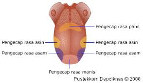

Mulut
Proses pencernaan makanan dimulai sejak makanan masuk ke dalam mulut. Di dalam mulut terdapat alat-alat yang membantu dalam proses pencernaan, yaitu gigi, lidah, dan kelenjar ludah. Di dalam rongga mulut, makanan mengalami pencernaan secara mekanik dan kimiawi.
Makanan yang kita makan pertama masuk ke mulut yang kemudian menjadi halus karena telah dikunyah dengan geligi kita dan dibantu oleh kelenjar ludah. Setelah halus barulah dapat kita telan dengan cepat melalui bagian bawah tekak dan kerongkongan.
Gigi
Tanpa adanya gigi, manusia akan sulit memakan makanan yang dimakannya. Gigi tumbuh di dalam lesung pada rahang dan memiliki jaringan seperti pada tulang, tetapi gigi bukanlah bagian dari kerangka. Menurut perkembangannya, gigi lebih banyak persamaannya dengan kulit daripada dengan tulang.
Jenis gigi manusia
Gigi seri: berbentuk pipih dan tajam untuk mengiris makanan.
Gigi taring: ujungnya yang runcing untuk mencabik dan menyobek makanan.
Gigi premolar (geraham depan): bentuknya berlekuk- lekuk untuk mengiris dan melembutkan makanan.
Gigi molar (geraham belakang): bentuknya berlekuk-lekuk untuk melembutkan makanan.
Lidah
Lidah berfungsi untuk mengaduk makanan di dalam rongga mulut dan membantu mendorong makanan (proses penelanan) serta menghasilkan kelenjar ludah. Selain itu, lidah juga berfungsi sebagai alat pengecap yang dapat merasakan manis, asin, pahit, dan asam.

Kelenjer ludah
Kelenjar ludah menghasilkan ludah atau air liur ( saliva). Kelenjar ludah dalam mulut ada tiga pasang, yaitu:
Kelenjar parotis, terletak di bawah telinga. Kelenjar parotis menghasilkan ludah yang berbentuk cair.
Kelenjar submandibularis, terletak di rahang bawah.
Kelenjar sublingualis, terletak di bawah lidah. Kelenjar submandibularis dan kelenjar sublingualis menghasilkan getah yang mengandung air dan lendir.
Ludah berfungsi untuk memudahkan penelanan makanan, membasahi, dan melumasi makanan sehingga mudah ditelan. Selain itu, ludah juga melindungi selaput mulut terhadap panas, asam, dan basa.
Di dalam ludah terdapat enzim ptialin ( amilase) yang berfungsi mengubah makanan dalam mulut yang mengandung zat karbohidrat ( amilum) menjadi gula sederhana jenis maltosa. Enzim ptialin bekerja dengan baik pada pH antara 6.8 – 7 dan suhu 37 °C.